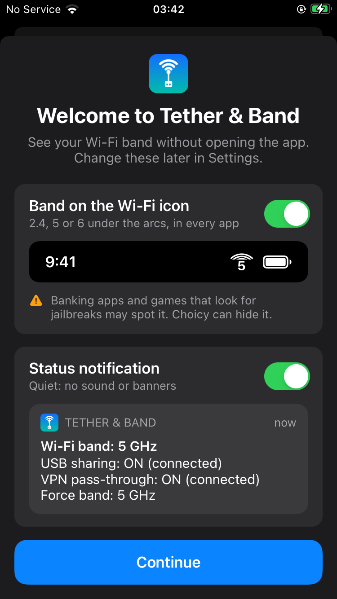
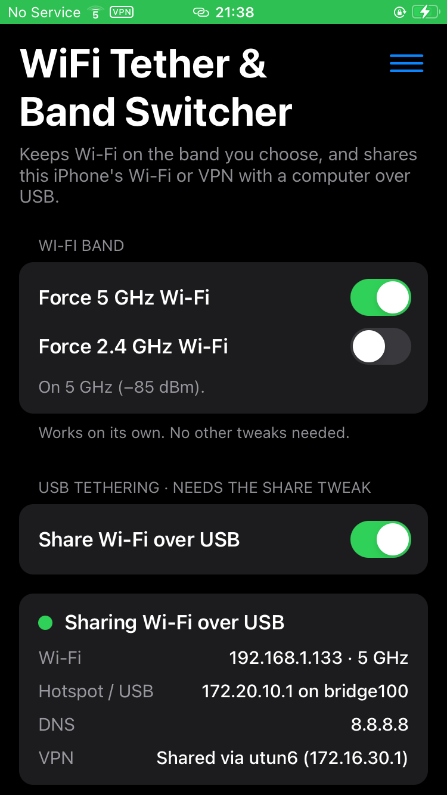
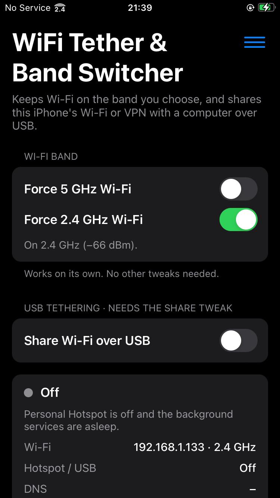

USB tethering, plus a Wi-Fi band switcher. Plug your iPhone or iPad into a computer and the computer is online through its Wi-Fi, or through its VPN. No SIM or data plan needed, so Wi-Fi-only iPads work too, and nothing to set up on the computer. And switches that keep its Wi-Fi on 5 GHz or 2.4 GHz.
- Plug and play. Leave the switch on and just plug in. If Windows misses the connection, WiFi Tether retries by itself. On a Mac that's also on Wi-Fi, put iPhone USB above Wi-Fi in its Network settings (Set Service Order).
- Shares your VPN. VPN apps or the built-in VPN: the computer goes through it too, DNS included.
- Switch VPN location while plugged in. The computer follows within a second or two.
- Full speed. No cap: about what the iPhone itself gets, up to what the USB port carries. Through a VPN, as fast as the VPN runs on the phone.
- Barely any added latency. Only a millisecond or two on top of the iPhone's own ping.
- One switch. Turns Personal Hotspot on, keeps Wi-Fi connected, handles airplane mode.
- Force 5 GHz or 2.4 GHz. Keeps it on the band you pick, even when the router moves it. Handy with routers that won't let you split the bands, like BT's Smart Hub 2, Sky's Max Hub, Google Nest Wifi and eero. Works on its own, without tethering or Share. Moving back is near-instant, with no disconnect, on iPhone X and older (A11 chip or older, iPads too). On newer devices that's new and untested; if it doesn't work there, Wi-Fi drops for about half a second each time.
- See it at a glance. The Wi-Fi icon shows the band (2.4, 5 or 6 under its signal arcs; circled in the last screenshot) in every app, iOS's Personal Hotspot indicator shows while a computer is connected, and a quiet notification says what's on. Respring once after installing.
- No battery drain when it's off.
- Free and open source (MIT).
USB tethering needs the Share tweak (the app has a button that adds its repo in Sileo); the band switches work without it. iPhone and iPad, rootless jailbreaks, iOS 15 and later.
Source code on GitHub
Changelog
1.6
See what's on without opening the app
- Band on the Wi-Fi icon: the status bar's Wi-Fi icon becomes three arcs for the signal over the band's number, 2.4, 5 or 6 (6 GHz), in every app. It's drawn in the icon's own colour and fits in the same space, so it looks at home on any status bar and any iPhone. It shows the band Wi-Fi is actually on, not what the switches are set to. On by default. Respring once after installing for it to appear.
- iOS's Personal Hotspot indicator (the coloured status bar with the link icon) now shows while the computer is connected, as it does when sharing mobile data. iOS only takes it from the phone's cellular service, which never says it's sharing when the hotspot shares Wi-Fi. Respring once after installing.
- Status notification (on by default): one quiet notification in Notification Centre. The title is the band Wi-Fi is on now (Wi-Fi band: 5 GHz), then three short lines: USB sharing: ON (connected), VPN pass-through: ON (not connected), Force band: 5 GHz. USB sharing and VPN pass-through follow the Share Wi-Fi over USB switch; the brackets say whether a computer, and a VPN, is connected. Always the same lines, so nothing jumps around. No sound or banner; it updates by itself.
New Sileo source: https://scog3.github.io/repo/, my repo for all my projects. If you added the old https://scog3.github.io/iOS-WiFi-tether/ source, remove it and add the new one: the old one doesn't get updates any more.
Installing
- Installed by opening the
.deb (Filza), it now resprings by itself a few seconds after installing, so the Wi-Fi icon and the hotspot indicator load. Sileo and other package managers show their Respring button as usual. - Installing it fresh (or again after removing it) shows the welcome screen again.
App
- Welcome screen the first time the app opens: the two options above, each with a preview (the new Wi-Fi icon, and the notification) and a switch, both on to start with, plus a note on apps that check for jailbreaks. One tap on Continue and you're done. Neither starts until then, and that's when iOS asks about notifications, not before you've opened the app.
- Main screen: band switching first, USB tethering underneath, marked as the only part that needs the Share tweak. Without Share, a short card in the tethering section says so, with the button that adds Share's repo in Sileo.
- Menu (☰, top right, level with the title, or swipe in from the right edge) that slides out, with Settings (the two options above) and About (short instructions, a link to GitHub, version, build and developer).
- Share or copy the log from Settings: as a .txt file (AirDrop, Save to Files, Mail…) or onto the clipboard, with the version and device on top. No more Filza for that.
1.5
USB tethering
- The app now sees what the computer is doing with the phone's USB connection, and waits accordingly.
- Waiting for the computer (blue): the computer hasn't picked up the hotspot yet. The app restarts the hotspot to make it look again, showing Retrying (2 of 4)…
- Connected to the computer (yellow): the computer has the phone's network but isn't using it, as a Mac that's on Wi-Fi does. Restarting doesn't help there, so the app doesn't; it says how to turn the Mac's Wi-Fi off or make it use the phone instead.
- Computer didn't connect (orange): the retries are over.
- A Reconnect button appears once the retries are over (or after 30 seconds of Connected). It tries straight away and starts the retries again.
- Retries no longer interrupt the computer. A restart while the computer is still setting up made it start over, so Windows could take minutes. The first retry now waits 15 seconds (Windows usually connects by itself within that), and none happen within 10 seconds of the computer changing the phone's USB setup.
- No retrying with nothing plugged in. The app now checks that the phone has external power (what shows it charging) before waiting for a computer, so with the cable out it just says Ready: plug in the USB cable.
- A charger no longer counts as a computer: with no computer setting up the phone's USB connection, the app just says Ready: plug in the USB cable. (Where that can't be read, it goes by what the battery reports is plugged in.)
- The log says what the computer has done with the USB connection (
usb: lines) and what's powering the phone (power: lines). - Shorter messages under the status.
1.4
Wi-Fi band switcher
- Fixed: a band switch could hang after the phone had been sitting for a while, until Wi-Fi was turned off and on. When the first hand-over didn't move it, the app asked iOS to scan too soon after the previous request; iOS rejected it without an answer, and the app waited 30 seconds and then gave up for 2 minutes. Scans are now spaced out, and one that isn't answered is retried after a few seconds.
- Faster first switch after the phone has sat on one band. The app gives up on a hand-over after about 1 second instead of 3, finds the radio, and then tries the hand-over once more, so that first switch may not drop Wi-Fi at all. If not, it rejoins as before.
- If iOS won't scan at all, the app turns Wi-Fi off and on by itself, the same as doing it in Settings (at most every 10 minutes), instead of waiting.
- While the first switch is under way, the app says it can take a few seconds.
- With Force 5 GHz on and the device on 6 GHz, the app says On 6 GHz (it used to say 5 GHz). Untested: no 6 GHz device to try it on.
- The log's kick count no longer counts the app's own hand-overs as router kicks.
USB tethering
- Mac: while a Mac is plugged in but not using the phone (it's on Wi-Fi), the app says Connected to the computer and explains how to put iPhone USB first in the Mac's network settings, instead of looking like it's still trying to connect.
- The waiting message no longer shows try 2, try 3…; the retries that help Windows still happen in the background.
- The log says why sharing stopped: switched off, Wi-Fi lost, Personal Hotspot off, or the USB network to the computer went away (and whether the cable still reads as plugged in). It also says when the hotspot gives the computer an address, and lists the phone's network connections while it waits for the computer.
- The tap Trust message says iPad on iPads.
1.3
- Faster first switch to a band the phone hasn't used lately. The quick hand-over can't move the phone to a band it hasn't seen recently, typically the first time you turn on Force 2.4 GHz while on 5 GHz. The app then has to find the other radio and join it, and iOS kept refusing to scan while on 5 GHz, so this could take 30 seconds or more. It now takes the radio from the networks iOS has seen recently, with no scan, so it should take a few seconds. After that first switch, hand-overs work both ways.
- If a join to a radio found that way fails, the next try scans for real.
1.2
- Band switches start straight away. The hand-over now goes first, with no scan, since iOS picks the radio itself. Before, the app scanned first, and iOS often turned scans down while on 5 GHz, so switching could take 30 seconds or more.
- Fixed: turning a band switch on just after picking up the phone could say the band isn't in range here and give up for 5 minutes, because a scan made while the phone was dozing came back incomplete. A band seen before on the same network no longer counts as missing; it just tries again in 15 seconds.
- No more scanning in the background while hand-overs work.
- GitHub's build page and the release notes now say whether the hand-over add-on was built for A12 and newer (arm64e).
1.1
- Hand-over for iPhone XS and newer (untested). The band switcher's no-drop move back now has a build for A12 chips and newer (iPhone XS, XR and later, and newer iPads). It hasn't been tried on one of these yet, and the app says so when you turn a band switch on. If it doesn't work, the app moves back the older way, with Wi-Fi dropping for about half a second. Reports welcome, whether it works or not.
- If iOS's Wi-Fi service restarts straight after a hand-over request, the app stops asking for hand-overs until the switch is turned off and on.
- The README's screenshots now sit side by side on phones.
1.0
- New name: WiFi Tether & Band Switcher. On the home screen it's Tether & Band.
- Force 2.4 GHz joins Force 5 GHz in a new Wi-Fi band section. Turning one on turns the other off.
- Moving back is now near-instant. The real cause turned out to be the router: routers with one network name on both bands move the iPhone between bands by themselves (band steering). WiFi Tether now notices the moment that happens and moves the iPhone straight back. On iPhone X and older (and iPads with an A11 chip or older) it uses iOS's own hand-over, through a small add-on in iOS's Wi-Fi service, so Wi-Fi doesn't drop; on newer devices it disconnects and rejoins, which drops Wi-Fi for about half a second.
- Installing restarts iOS's Wi-Fi service so the add-on loads; Wi-Fi drops for a few seconds.
- The VPN row shows a connected VPN even while USB sharing is off; before, it said Not connected.
- Shorter texts in the app's Wi-Fi band section, a shorter 5 GHz warning and shorter instructions. The app says iPad on an iPad.
- Removed the 2.4 GHz blocking from 0.4.13 and other experiments that didn't do anything on the iPhones tested.
daemon.log stays under 1 MB, with the part before that kept in daemon.log.old, and gets a status line every 5 minutes while a band switch is on.- Fixed: after a long time on 5 GHz, a scan that came back empty could make it give up for 5 minutes.
- What was tried along the way is written up in
docs/band-switching-research.md.
0.4.17
- Force 5 GHz moves the iPhone back to 5 GHz within a few seconds whenever iOS switches to 2.4 GHz on its own, using the 5 GHz radio it already found instead of scanning again. iOS does that where 5 GHz is weaker than −70 dBm; each move drops Wi-Fi for about a second.
- No longer stops after 10 moves: it only pauses (5 minutes) if iOS goes straight back within 30 seconds 5 times in a row.
- A scan that iOS turns down because it's busy is retried after 15 seconds instead of 2 minutes.
0.4.16
- Force 5 GHz: no more crash, but on this iPhone iOS kept an empty block list, so blocking 2.4 GHz didn't stick. Now every move to 5 GHz also tells iOS which 2.4 GHz radios to avoid for that join, the same way iOS does for its own joins, so it can't pick 2.4 GHz again. The log says whether the iPhone's Wi-Fi chip supports the lasting block as well.
0.4.15
- Force 5 GHz: fixes the background service crashing when blocking 2.4 GHz. iOS writes a yes/no into an extra argument of the call; that's now given room, and the answer is only read after checking it's valid. Anything that still goes wrong there trips the crash guard, which turns Force 5 GHz off instead of restarting over and over.
0.4.14
- Force 5 GHz: first attempt at fixing the crash when blocking 2.4 GHz (0.4.13). Don't use Force 5 GHz on this version.
0.4.13
- Force 5 GHz actually holds 5 GHz now. Asking iOS to join the 5 GHz radio didn't work: iOS chooses the radio itself and picked 2.4 GHz again. Now WiFi Tether puts your network's 2.4 GHz radios on iOS's own block list (the one iOS uses for access points that misbehave), so iOS itself joins 5 GHz and won't switch back. The block is lifted automatically when 5 GHz goes out of range, Wi-Fi drops, you join another network or switch it off, so you're never left without Wi-Fi.
- The text under the switch says whether 2.4 GHz is blocked. On an iPhone where blocking isn't available it falls back to the old way.
0.4.12
- Force 5 GHz joins 5 GHz only once the disconnect has actually happened. Joining a moment too early was ignored, and iOS went straight back to 2.4 GHz, so the phone dropped and rejoined Wi-Fi again and again. It then watches for up to 10 seconds whether the iPhone lands on 5 GHz.
- Fewer Wi-Fi drops when it doesn't work: 2 tries per attempt, then it waits 1, 5 and then 15 minutes before trying again, and says so under the switch.
- Force 5 GHz works without the Share tweak; only USB sharing needs Share.
- The app is split into USB tethering and 5 GHz Wi-Fi sections, and the package is now called WiFi Tether & Force 5 GHz in Sileo.
0.4.11
- Force 5 GHz Wi-Fi (was Keep Wi-Fi on 5 GHz) now keeps the iPhone on 5 GHz however weak the signal, unless it's too weak to connect to at all (below −85 dBm). Turning it on asks first, because a weak 5 GHz signal can make Wi-Fi slower or unstable.
- Checks every 5 seconds instead of 10, so when iOS switches back to 2.4 GHz it's moved back to 5 GHz sooner. The safety limit is now 10 moves in 10 minutes.
0.4.10
- Keep Wi-Fi on 5 GHz actually moves the iPhone now: iOS ignores a request to join another radio of the network it's already on, so WiFi Tether disconnects first and joins the 5 GHz radio straight away. If iOS's own auto-join wins the race back to 2.4 GHz, it tries once more.
0.4.9
- New Keep Wi-Fi on 5 GHz switch (off by default). Once an iPhone has joined a router's 2.4 GHz radio it stays there, even right next to the router, because iOS only looks for another radio when the signal gets weak; iOS has no setting to pick the band. With the switch on, WiFi Tether moves the iPhone to the same network's 5 GHz radio, and moves it back whenever iOS drifts to 2.4 GHz. Works with sharing off too.
- It stays on 2.4 GHz when 5 GHz is too weak where you are, and if iOS keeps drifting back it waits a few minutes before trying again, so Wi-Fi doesn't keep dropping. The switch shows what it's doing. New, so please report how it goes.
0.4.8
- The Wi-Fi row shows which band the iPhone is on, e.g. 192.168.1.133 · 5 GHz. On 2.4 GHz everything is a lot slower, the computer included; many routers decide the band themselves and can leave the iPhone on 2.4 GHz.
0.4.7
- Add Share's Repo in Sileo button: opens Sileo with Share's repo address filled in, every time. Tap Add Dist Repo, then Add; the app's instructions now say so. (Sileo's Add Source runs an online check first that can drop the repo silently.)
- The installer no longer adds Share's repo to Sileo's list. Sileo could overwrite the change, so the repo sometimes never appeared and the button then said Share couldn't be found.
0.4.6
- Fixes the app squeezing everything into a narrow column on iPhones (from 0.4.4's iPad layout change).
0.4.5
- Share's repo is now added to Sileo's own list, so it appears and can be removed in Sileo like any repo you added yourself. The separate file 0.4.3 and 0.4.4 used is moved over automatically.
0.4.4
- Share is required. Without the Share tweak WiFi Tether now does nothing: the switch is greyed out and the app explains what's missing, with a Get Share in Sileo button.
- Fixes Personal Hotspot not turning on when WiFi Tether was installed before Share. When Share is installed WiFi Tether restarts iOS's hotspot service so Share loads, and whenever that service restarts WiFi Tether reconnects to it.
- On iPads and other wide screens the app keeps a phone-width layout, centred.
- Every build has its own package version, so Sileo never gets two different files with the same version.
0.4.3
- Install and update from Sileo. WiFi Tether now has its own repo:
https://scog3.github.io/iOS-WiFi-tether/. Updates show up in Sileo like any tweak. - Installing WiFi Tether adds the Share tweak's repo to Sileo if it isn't there yet, and Sileo offers Share alongside it.
- WiFi Tether's page in Sileo has a Changelog tab, and other package managers show the changelog as a web page.
0.4.2
- Removed the Personal Hotspot settings button.
0.4.1
- Connections switch over instantly when the VPN connects, disconnects or changes location. Before, the computer kept sending on connections that no longer went anywhere and took about a minute to give up; now the phone tells it straight away that they're closed, so it reconnects at once through the new route.
- The VPN also counts as changed when it reconnects with the same interface name but a new address.
- Airplane mode. Switching WiFi Tether on turns airplane mode off, and switching it off turns airplane mode back on (only if WiFi Tether turned it off). If airplane mode is turned on while sharing, a pop-up offers to turn it off again.
- Computer not connecting (e.g. the first time on a new USB port): when a computer is plugged in but hasn't connected after 10 seconds, the hotspot is restarted automatically, the software version of replugging, and retried while it's plugged in. New Waiting for the computer status shows what's happening.
- New Airplane mode is on status.
0.4.0
- One switch does everything. Turning WiFi Tether on now turns Personal Hotspot on for you, without dropping Wi-Fi, and keeps it on, including after re-jailbreaking. Turning it off turns Personal Hotspot off. No more Settings page, Control Center or "turn on Wi-Fi?" prompt.
- The hotspot is switched on quietly, only for USB: it isn't made visible to Wi-Fi devices, which is what made iOS disconnect Wi-Fi. If Wi-Fi drops anyway, it's reconnected automatically.
- If the hotspot turns itself off while the switch is on, it's turned back on (at most three times in 10 minutes).
- Nothing runs in the background while the switch is off. Both services sleep until the switch changes, instead of checking every second.
- New Ready: plug in the USB cable status.
- Uninstalling now always removes the routing rules and gateway settings.
- Hotspot and Wi-Fi control is based on AutoHotspot by 张小生 (MIT).
0.3.1
- Works with any full-tunnel VPN. The VPN is now found by asking the kernel which interface the iPhone's own internet traffic uses, instead of guessing from interface names. Fixes IKEv2 VPNs (
ipsec interfaces) and VPN apps using 198.18.x.x addresses not being detected. - Fixes pages loading forever through the VPN. VPN tunnels often take smaller packets than the computer sends (IKEv2: 1280 bytes). WiFi Tether now tells the computer to send smaller packets, the way a router does, instead of dropping them.
- The VPN helper's own interface moved to
192.0.2.1, an address no VPN uses. - The VPN helper looks for a VPN app process every 30 seconds instead of every second when there isn't one (IKEv2 VPNs have none).
0.3.0
- Share the iPhone's VPN. When a VPN is connected on the iPhone, the computer's traffic goes through it automatically, including DNS lookups. Disconnect the VPN and traffic goes straight out through Wi-Fi again.
- Based on pftun by Muhammet Ali Aydın (MIT), adapted to work with Share's local-only hotspot.
- Raises the VPN app's memory limit while sharing, slows uploads if the VPN gets close to it, and restarts the VPN if iOS stops it anyway (the restart needs python3).
- New VPN row in the app.
- Logs are capped at 1 MB, and a repeating error is only logged once.
- Removed the unmaintained macOS build script; GitHub builds with
build-linux.sh.
0.2.1
- The gateway and DNS entries stay in place for as long as sharing is switched on, and are put back the instant iOS rewrites the hotspot settings. Fixes computers sometimes connecting with "No internet" until unplugged and plugged back in.
- Checks every second instead of every two.
0.2.0
- No setup on the computer. The iPhone now hands out the gateway and DNS server automatically, so the computer gets online as soon as it's plugged in.
- New app icon.
0.1.0
- First release: shares the iPhone's Wi-Fi connection over USB on top of Share's hotspot (NAT and DNS forwarding through the packet filter).
- App with an on/off switch and status.